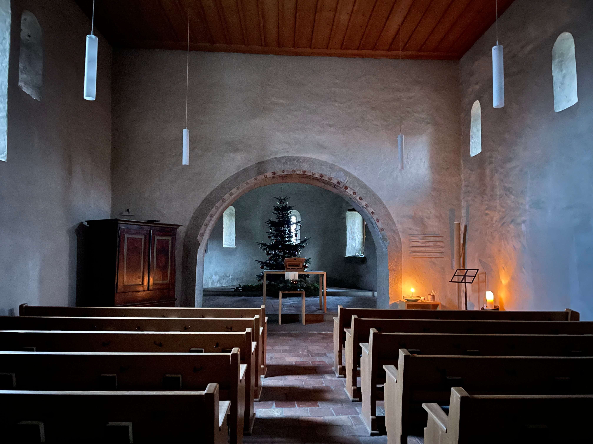

Abseits gelegen: Zufallsbegegnung am Wanderweg
Die evangelisch-reformierte Kirche Kleinhöchstetten liegt an einem Wanderweg zwischen Bern und Thun im oberen Aaretal. Zwischen dem auf einer Terrasse gelegenen Ort Kleinhöchstetten (549m) und dem gegenüberliegenden Belpberg verlaufen parallel zueinander die Aare und die weithin hörbare Autobahn A6. Östlich verläuft die Thunstrasse nach Rubigen. Die Kirche ist somit von hochfrequentierten Strassen umgeben, selbst jedoch kaum in den Öffentlichen Verkehr eingebunden. Im Süden eröffnet sich der Blick auf die Berner Alpen.
Die Kirche befindet sich, von den wenigen Gebäuden des Weilers umgeben, an einem kleinen Platz, und kann zu Fuss umrundet werden. Ausser einem Hinweis auf der Wanderbeschilderung deutet wenig auf die Existenz eines in zweierlei Hinsicht höchst bedeutsamen Schauplatzes der (Berner) Christ_innentumsgeschichte hin, der in der Mitte des 20. Jahrhunderts gerade noch vor dem Abriss bewahrt werden konnte. Heute lädt die renovierte und in ihrer frühmittelalterlichen Struktur wiederhergestellte kleine Kirche zum Verweilen ein.

Westseite mit Eingang und Vorhalle. (Bild: Miriam Löhr)
Früheste christliche Zeugnisse aus Stein in der Region
Das Aaretal war mutmasslich bereits in vorchristlicher Zeit keltisch besiedelt. Für den Ort Kleinhöchstetten lässt sich keine vorrömische Besiedelung nachweisen, von einer römischen Ansiedelung ist jedoch auszugehen. Zum einen lag der Ort verkehrsgünstig zwischen römischen Ortschaften, zum anderen lassen Mauerrestfunde unter der Kirche darauf schliessen. Unterschiedlich zu datierende Grabfunde um die Kirche herum deuten auf eine Nutzung als Pfarrkirche. Schriftliche Dokumente zur Baugeschichte fehlen weitgehend, so dass heutige Erkenntnisse wesentlich auf Ausgrabungen in den 1950er Jahren fussen.
Ein Kirchlein unter der Kirche
Neben römischen Mauerresten wurde unter dem heutigen Grundriss das weitgehend analoge Fundament einer kleineren, frühmittelalterlichen Saalkirche gefunden. Dieser ältere Bau stammt mutmasslich aus der Zeit der Wende des 7. zum 8. Jahrhundert, in der weitere Kirchbauten am Thunersee und in der Aaretal-Region zu den ersten steinernen christlichen Manifestierungen gehören. Die heutige Kirche, die im Wesentlichen aus dem vergrösserten Neubau besteht, misst knapp 20x10m. Zu datieren ist dieser heutige Bau mutmasslich in das hochburgundische 10. Jahrhundert. Der Raum umfasst neben Saal, Chor und Apsis zwei vom Chor abgehende Annexe. Im Gebiet der heutigen Schweiz finden sich mehrere Annexkirchen frühmittelalterlichen Typs, jedoch ist nur Kleinhöchstetten über die Mauerfundamente hinaus erhalten.

Ostseite mit Apsis und Nischenkranz. (Bild: Miriam Löhr)
Spätmittelalterliche Kirchenumnutzung: Kleinhöchstetten wird Wallfahrtskirche
1348 erfährt «Hönstetton» als Marienkirche «Unserer Lieben Frau» erstmalig eine Erwähnung in Urkunden, als Wallfahrtskirche mit Priester 1353. In Folge dieser «Umnutzung» wurden umfassende bauliche Veränderungen vorgenommen, die die Stadt Bern, inzwischen Pfrundeigentümerin der Kirche, veranlasste. Die Annexe verschwanden, eine Sakristei wurde erbaut, ebenso wie der Triumphbogen an der Schwelle zum Chorraum. Die Fenster wurden erneuert, Wandmalereien aufgetragen, ein Wandtabernakel für Hostien sowie ein kleines Becken, eine Piscina, eingebaut. Die theologische Grosswetterlage zog jedoch sehr bald erneut grundlegende Veränderungen nach sich.
Anfänge der Berner Reformation in Kleinhöchstetten
Die Kleinhöchstettener Pfarrer Johann Wecker, wirkend von 1498 bis 1522, sowie Jörg (Georg) Brunner (erstmals erwähnt 1520–1571) vertraten vehement die neue Lehre. Brunner zog mit seinen flammenden Predigten die Aufmerksamkeit auf Kleinhöchstetten und nicht zuletzt Kritik auf sich: Am 29. August 1522 musste er sich im Berner Barfüsserkloster einer umfassenden Anklageschrift stellen. Brunner gilt als erster Reformator im Bernbiet, indem er den Bernischen Rat mit den Thesen des deutschen Reformators Martin Luther konfrontierte. Durch den erfolgreichen Ausgang des Religionsgesprächs bestärkt, verweigerte Brunner die Lesung der Messe, woraufhin er aus dem Amt entfernt und des Landes verwiesen wurde. In der Folge wurde die Kleinhöchstettener Wallfahrtskirche ihrer Funktion entzogen und 1534 an den Landwirt Sulpitius Nussbaum verkauft. Das nun profanierte Gebäude diente fortan als Knechtsunterkunft, Stall, Werkstatt und Lagerraum.

Gedenktafel an Jörg Brunner am Eingang der Kirche. (Bild: Miriam Löhr)
Niedergang und Zerfall
Mit der Zeit verfiel das Gebäude zunehmend. 1939 sollte die ehemalige Kirche abgerissen werden, was jedoch während des Zweiten Weltkriegs zunächst vergessen ging. Nach einem Einsturz eines Teiles des Kirchendachs stand die Ruine 1952 zum Verkauf. Dass es nicht zu einem Abriss kam, ist dem Worber Sekundarlehrer Ernst Aebi und 24 seiner Schüler zu verdanken, die beim Berner Heimatschutz für den Erhalt des historischen Gebäudes eintraten. Trotz der hohen Kosten und Zweifeln an der Tauglichkeit der kleinen Kirche als heutiges Gotteshaus gelang die Finanzierung durch unterschiedliche Geldgeber_innen auf Bundes- sowie kantonaler Seite, des Heimatschutzes, der Landeskirche sowie durch Privatspenden.
Restauration der Ruine und heutige Bedeutung
In den Jahren 1962–1965 wurde die Kirche restauriert und in ihren vorreformatorischen, spätmittelalterlichen Grundriss zurückversetzt. Vor dem Haupteingang wurde eine offene Vorhalle errichtet, ferner wurde ein Dachreiter mit zwei Glocken aufgesetzt. Wandtabernakel und Malereien wurden, soweit möglich, restauriert. Das Gebäude in seiner heutigen Form weist ein spätgotisches sowie mehrere kleine romanische Fenster auf. Der Nischenkranz der Apsis ähnelt denen der Amsoldinger und Spiezer Kirchbauten, ist jedoch einfacher gehalten und damit möglicherweise älter. Die Kirche steht mit dem Nischenkranz mutmasslich mit italienischen Baustilen der Zeit in Beziehung.
Mit der Lage an einer wichtigen historischen Verkehrsachse zwischen dem Norden und dem Süden der Alpen, unter keltischem, alemannischem, burgundischem und römischem Einfluss und als Ausgangspunkt der Berner Reformation ist die Kirche Kleinhöchstetten Schauplatz «europäischer» Geschichte. Kunstgeschichtlich ist sie mit Sakralbauten weit über die Thunersee-Region hinaus verbunden. Als historischer Bau bietet die kleine Kirche ein Fenster in vergangene Zeiten und verbindet ihre bewegte Geschichte mit der Gegenwart.
Die Kirche gehört heute als Gotteshaus zur Kirchgemeinde Münsingen.
Schiff mit Blick auf Triumphbogen und Chor. (Bild: Miriam Löhr)
Miriam Löhr ist Postdoktorandin am Institut für Praktische Theologie an der Theologischen Fakultät der Universität Bern.
Weitere Artikel von {{ author.author }} finden Sie hier:
Zur Vertiefung:
- Caviezel-Rüegg, Zita: Die Kirche Kleinhöchstetten, Schweizerische Gesellschaft für Kunstgeschichte GSK, Bern 1996.
- Dubler, Anne-Marie: Artikel Kleinhöchstetten (Version vom 21.10.2008), in: Historisches Lexikon der Schweiz HLS, verfügbar unter: https://hls-dhs-dss.ch(27.12.2021).
- Website der Reformierten Kirche Münsingen: https://www.ref-muensingen.ch (28.12.2021).